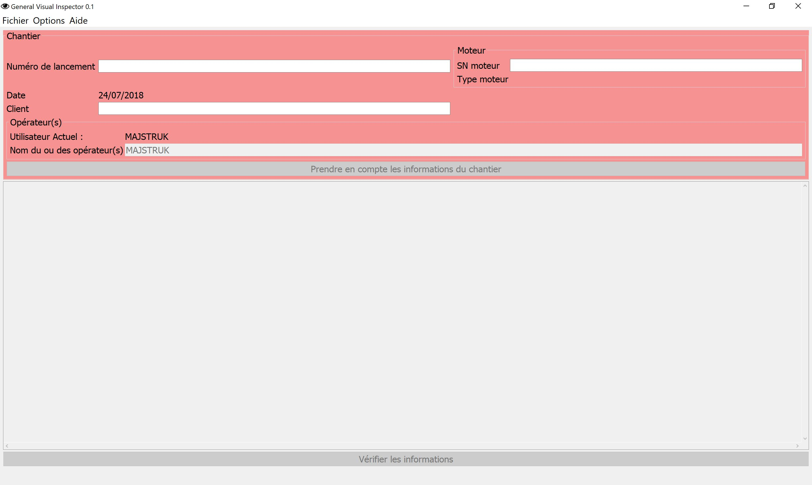
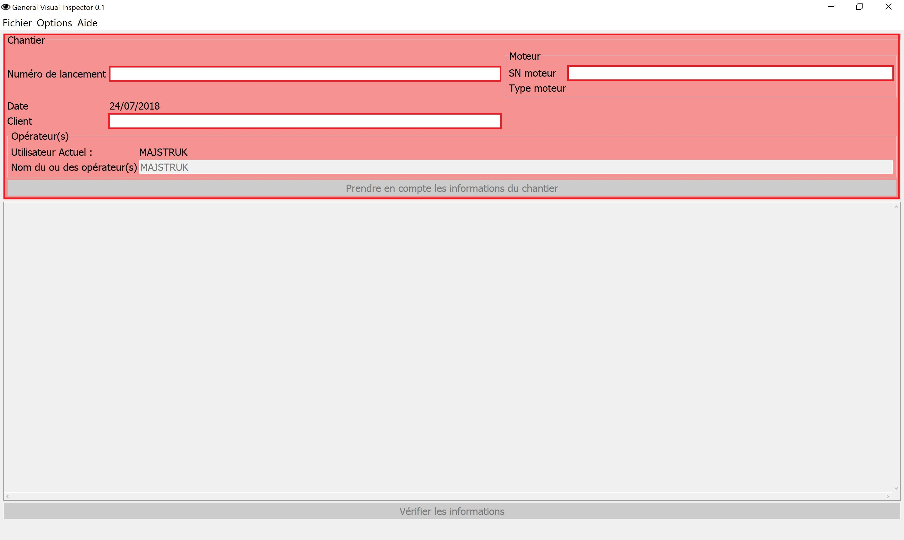
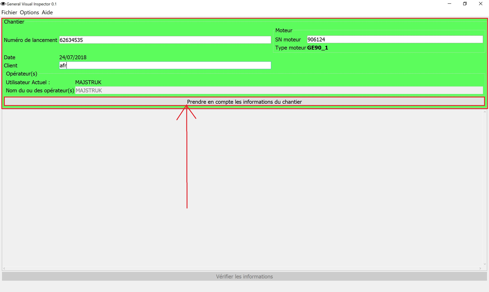
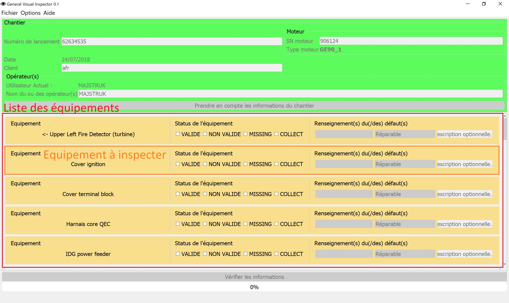
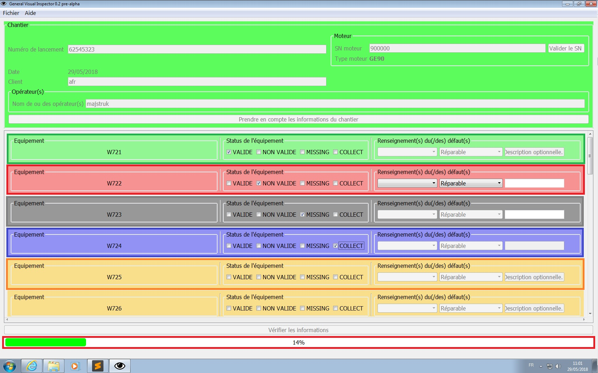
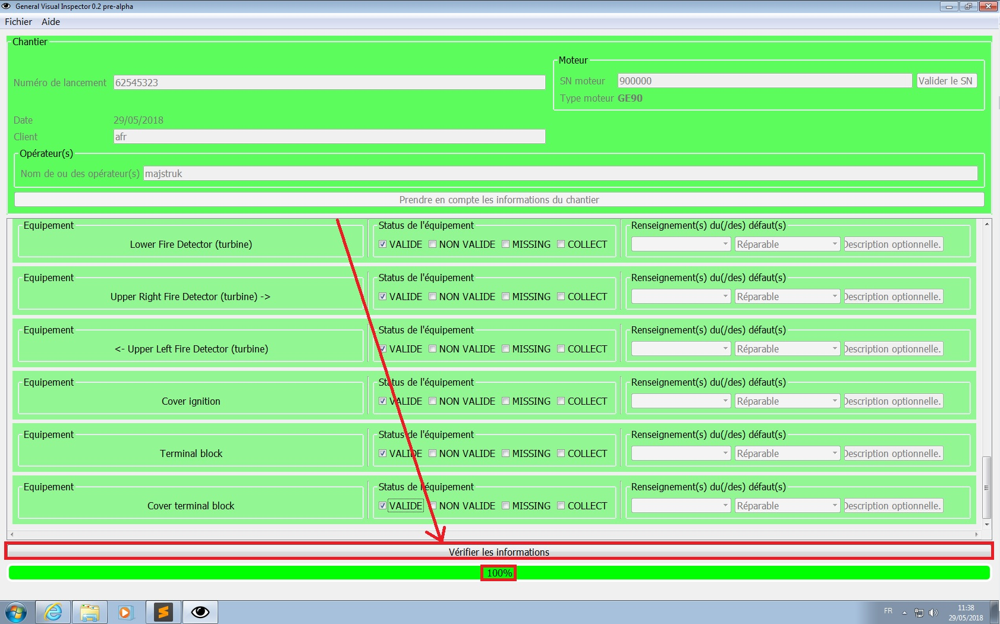
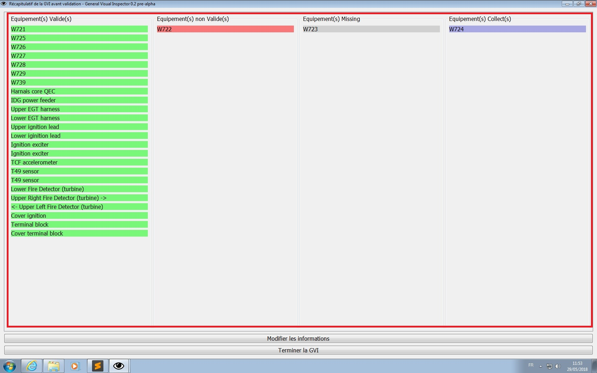
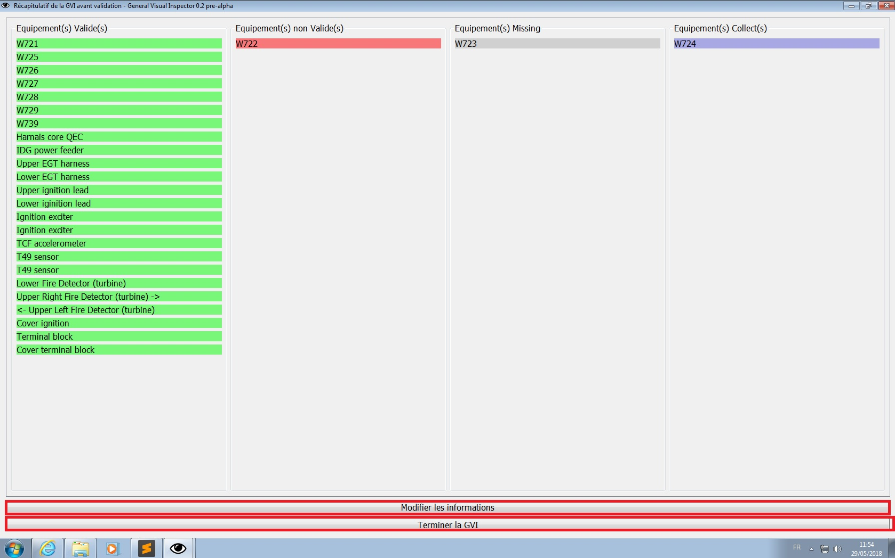

Entrez votre login pour vous connecter à GVIsor (le même que celui utilisé pour vous connecter sur votre cession). Attention de bien respecter le format mXXXXXX où les 'X' sont les six premiers numéros de votre matricule. Puis cliquez sur le bouton Valider. Si le login que vous avez entré est dans la base de donnée, la connexion réussie et un message de bienvenue apparaît à l'écran.
Sinon un message vous indique le problème qu'il y a eu et vous êtes invité à entrer à nouveau votre login pour vous connecter.
Pour quitter ou annuler la demande de connexion, cliquez sur le bouton Quitter.
Bienvenue sur GVIsor:
Après le démarrage, vous voiçi sur la page d'acceuil de GVIsor:

Une fois sur la page d'acceuil de GVIsor:
Rentrer les informations relatives au chantier.
Attention, il faut respecter certaines syntaxes:
Le numéro de lancement doit être composé uniquement de 8 chiffres.
Le SN du moteur doit être composé uniquement de 6 chiffres, le type du moteur est automatiquement déduit.
L'indicatif de la compagnie d'exploitation du moteur doit être composé des trois lettres la représentant (Air France -> AFR ou afr).
Le ou les nom(s) des opérateurs allant ou ayant effectué la GVI sont automatiquements remplis par GVIsor après la saisie de votre matricule.
En cas d'erreur, un message apparaît à l'écran en vous indiquant l'erreur qui a été effectuée. Il vous est alors possible de corriger celle-çi.

Si les informations rentrées sont correctes:
le fond de l'entête de la page d'acceuil devient vert.
le bouton "Prendre en compte les informations du chantier" s'active.
Si les informations rentrées sont incorrectes ou manquantes, il est impossible de poursuivre le processus.
Le fond de l'entête de la page d'acceuil reste rouge.

Cliquer sur le bouton "Prendre en compte les informations du chantier":
L'entête de la page d'acceuil est désactivée afin d'éviter des erreurs involontaires.
La liste des équipements à inspecter est alors chargée.

Après l'inspection visuelle d'un équipement:
Il faut sélectionner un status pour chaque équipement de la liste,
par défaut les équipements n'ont pas de status définis.
Au changement du status d'un équipement, la couleur de l'équipement change selon le code de couleur suivant:
Orange -> Equipement sans aucun status
Vert -> Equipement valide
Rouge -> Equipement non valide
Gris -> Equipement missing
Bleu -> Equipement collecté
Deux cas particulliers:
Equipement(s) non valide(s):
Si le status d'un équipement est défini comme non valide, il faut compléter cette information grâce aux champs disponibles dans la zone "Renseignement(s) du (/des) defaut(s)" qui sont alors activés pour l'équipement actuel.
Type du défaut:
Choisir le type du défaut:
Vide: dans le cas ou l'équipement est envoyé en Bench Test
Défaut de continuité: Suite à un Banc Firac passé
Défaut d'isolement: Suite à un Banc Firac passé
Gaine d'un harnais HS: Suite à l'inspection visuelle
Une ou plusieurs prise HS: Suite à l'inspection visuelle
Gestion du défaut:
Réparable: Les réparations sont effectuées par les équipes d'éléctricien de l'atelier.
Envoie en réparation: Les réparations ne sont pas effectuées par les équipes d'éléctricien de l'atelier.
Envoie en Bench Test: Le ou les équipement(s) sont envoyé(s) en test.
Complément d'information:
C'est un champ libre pour écrire des informations complémentaires sans limites de tailles.
Equipement(s) missing:
Dans le cas d'un équipement missing, seul le champ "Complément d'information" est activé afin de pouvoir renseigner par exemple la raison du missing.
Une barre de progression située en bas de la fenêtre principale indique l'évolution de la GVI en cours.

Chaque modification est directement enregistré dans un fichier de sauvegarde. Un message apparaît dans la zone de notification en bas à gauche de la fenêtre principale.
Lorsque tous les équipements de la liste ont un status (valide / non valide / missing / collect):
La barre de progression est à 100%
Le bouton "Vérifier les informations" devient actif.
Cliquer sur "Vérifier les informations" afin de continuer en vérifiant que les informations rentrées soient correctes.

Récapitulatif de la GVI:
La fenêtre "Récapitulatif de la GVI avant validation" apparaît. Elle est divisée en 4 sections:
Equipement(s) Valide(s)
Equipement(s) Non Valide(s)
Equipement(s) Missing
Equipement(s) Collect(s)
Chacune de ses sections contient une liste des éléments inspectés et ceux-çi sont répartis dans la section appropriée d'après le status qui leur a été atribué.
Il s'agit donc dans cette fenêtre de vérifier que le status attribué aux équipements est le bon.

Si une erreur a été faite, un clique sur le bouton "modifier les informations" redirige vers la page principale de GVIsor où il vous est possible de modifier le status de l'équipement en question. Si la GVI est terminée et que tous les équipements ont le status approprié, cliquer sur "Terminer la GVI"

Enregistrer les resultats de la GVI: (en cours de développement)
Une fenêtre de type dialogue apparaît vous offrant deux options:
Save: Lancer l'enregistrement de la GVI au format excel.
Cancel: Ne pas enregistrer et aller à l'étape suivante.
Imprimer le resultats de la GVI: (en cours de développement)
Une fenêtre de type dialogue apparaît vous offrant deux options:
Print: Lancer l'impression du résultat de la GVI.
Cancel: Ne pas imprimer.
En cas d'erreur lors du démarrage ou du fonctionnement du programme:
merci de se reporter à la section Gérer les problèmes d'utilisation.